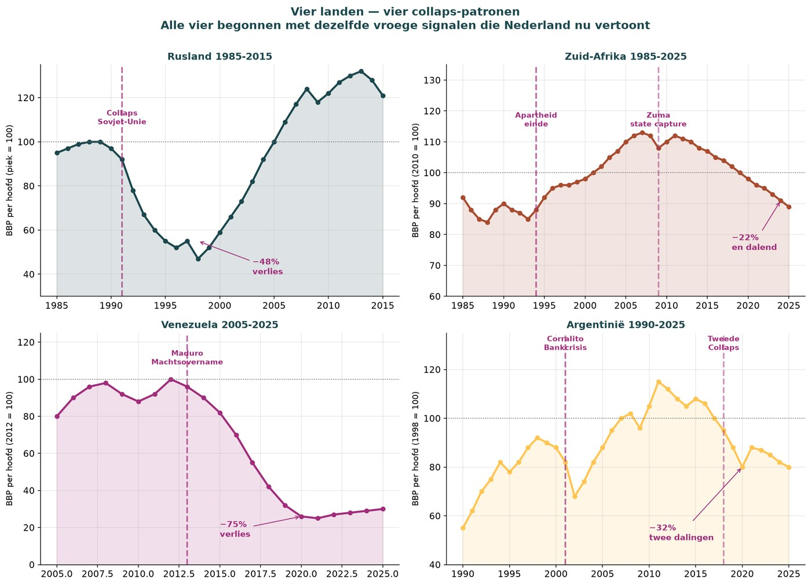
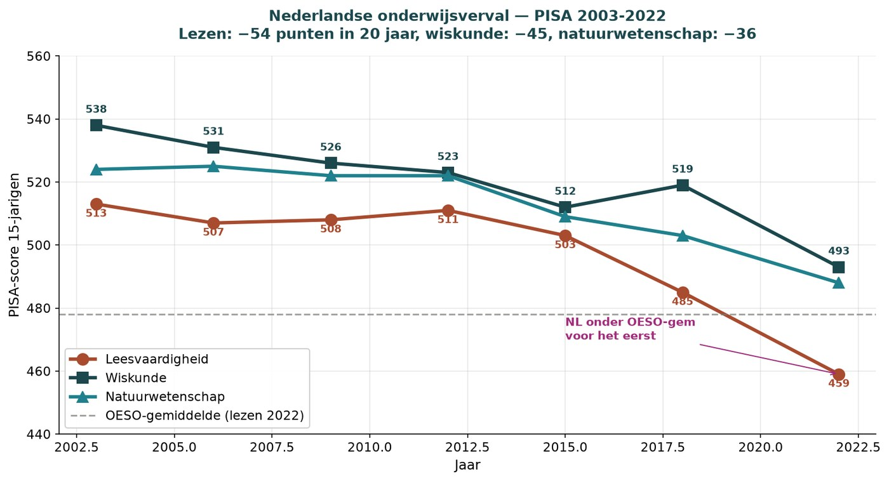
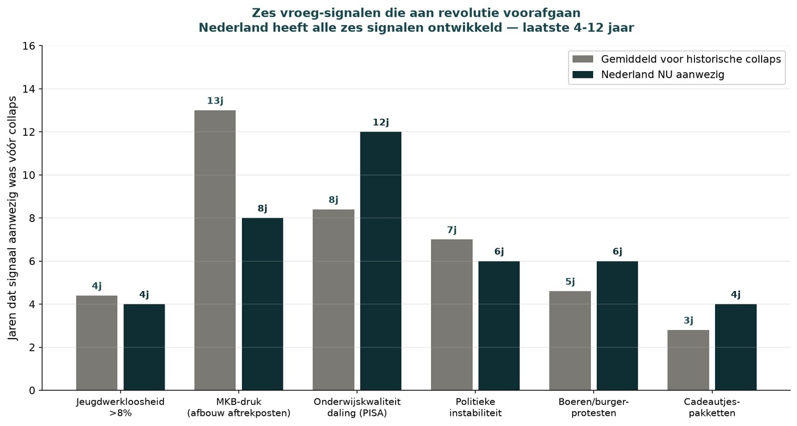
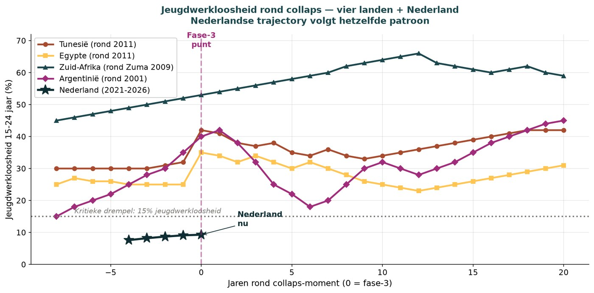
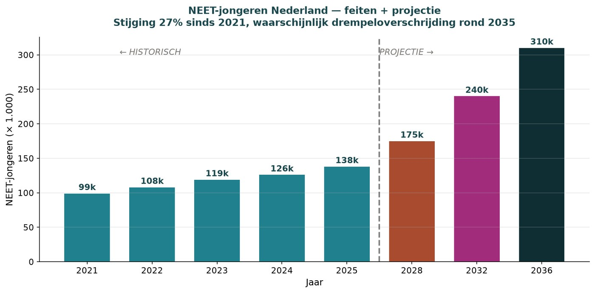
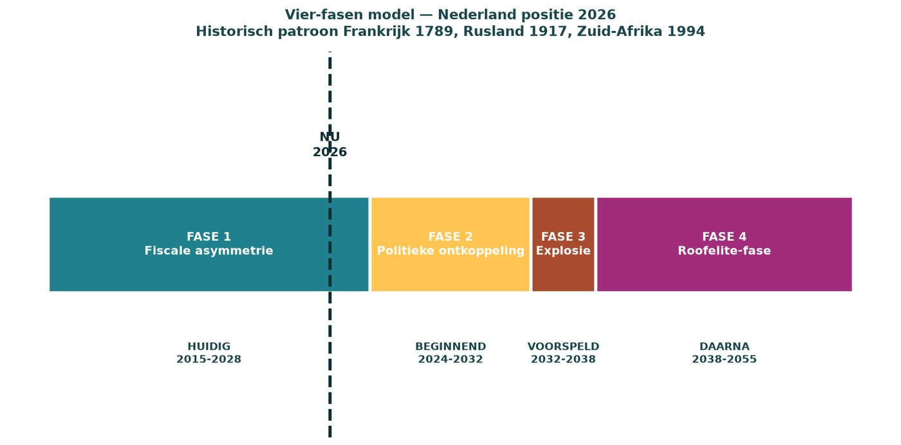
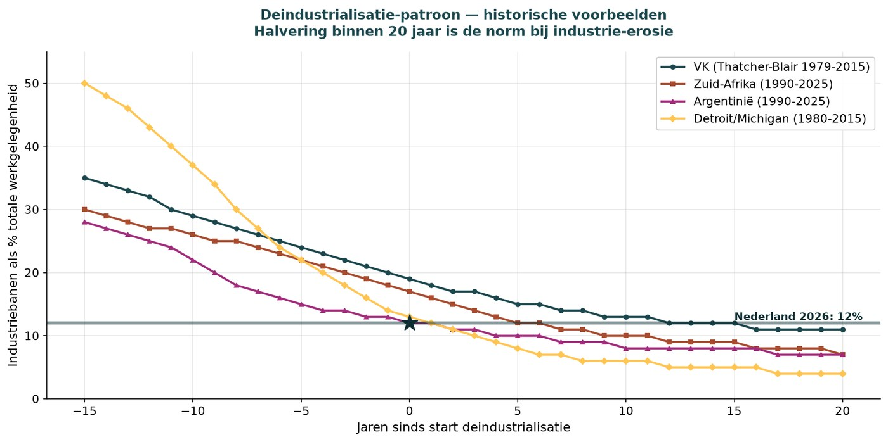
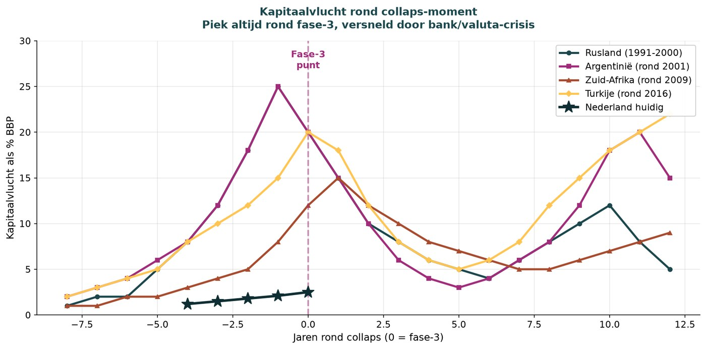
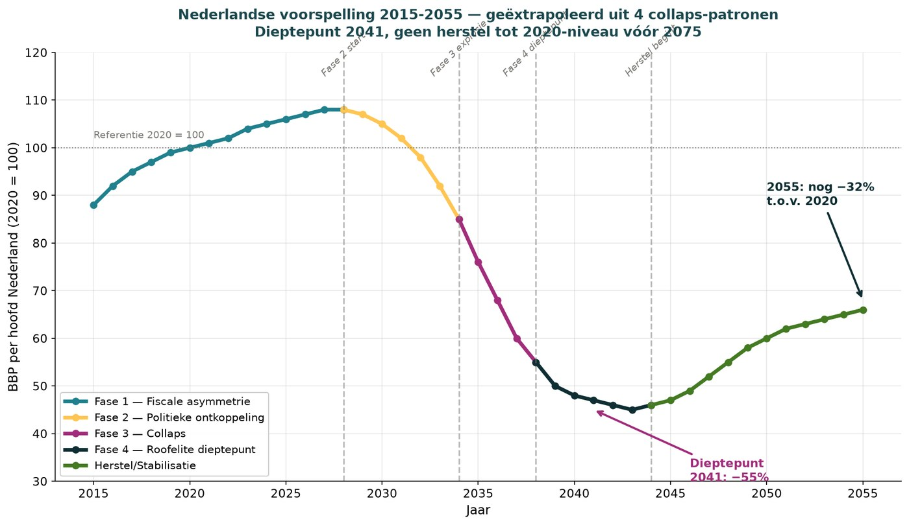
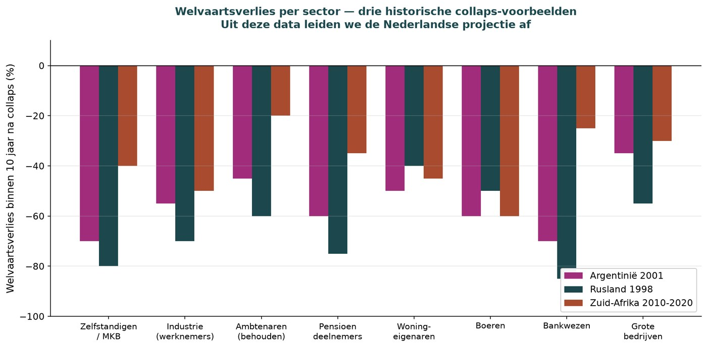

La Revolución Neerlandesa
Predicción 2028-2055 — deducida de cinco patrones históricos de colapso, corregida por la posición real de deuda, calibrada con la curva alemana.
Jacobus van Merksteijn
- Autor --- Jacobus van Merksteijn
- Fecha --- 18 de julio de 2026, Palma, Mallorca
- Sección --- Predicción político-económica · Edición 2 (Política fiscal) · con paralelos alemanes y franceses
- Fuentes --- CBS Finanzas Públicas marzo 2026, DNB junio 2026, Miljoenennota 2026, Bundesbank marzo 2026, Ministerio de Finanzas alemán DBP 2026, Bruegel octubre 2025, Stiftung Marktwirtschaft, OCDE PISA-2022, Banco Mundial PIB per cápita, Skocpol (1979), Goldstone (1991), observación ocular propia de Francia julio 2026
- Método --- Modelo de cuatro fases de la sociología política, análisis de curvas Rusia/Sudáfrica/Argentina/Venezuela, corrección del ratio de deuda neerlandés por imputaciones del PIB, análisis comparativo con Alemania
La revolución neerlandesa se acerca. No como lucha armada, sino como implosión sistémica: una serie de crisis coincidentes entre 2032 y 2035 que rompen el sistema político-económico actual. Lo que sigue son 10-15 años de caos con dominancia de élites depredadoras, seguidos de estabilización autoritaria bajo un nuevo líder. El bienestar neerlandés cae al 45-50% del nivel de 2020 en el punto más bajo (2040), se recupera hasta el 65-70% en 2055. La industria desaparece en su mayor parte. Francia va tres a cinco años antes. Los Países Bajos y Alemania están fiscalmente en la misma curva y probablemente van simultáneamente. La tranquilidad anterior de que tenemos una posición de colchón separada está contablemente obsoleta.
La deuda oculta — por qué llega antes de lo que se admite
Antes de leer el patrón, debe saber dónde están realmente los Países Bajos fiscalmente. La cifra oficialmente comunicada oculta sistemáticamente la realidad. Esto no es retórica. Es contabilidad.
Los Países Bajos tienen a finales de 2025 una deuda estatal de 524.000 millones de euros, igual al 44,4% del PIB oficial. El CBS, el DNB, el Ministerio de Finanzas y la Miljoenennota repiten esta posición como prueba de que los Países Bajos permanecen muy por debajo del valor de referencia europeo del 60% — fiscalmente disciplinados, en orden. Ese es el mensaje que recibe la Cámara de los Diputados, que oyen las agencias de calificación, que creen los inversores, que citan los periódicos.
El ratio de deuda es una fracción: deuda dividida por PIB. Si inflas artificialmente el denominador, el ratio parece más bajo de lo que realmente es. Los Países Bajos hacen esto sistemáticamente a través de cuatro construcciones contables que juntas producen aproximadamente 108.000 millones de euros, un 9,2%, de PIB artificial:
- Alquiler imputado — el CBS calcula lo que 4,6 millones de propietarios de vivienda pagan «hipotéticamente» a sí mismos en alquiler y lo suma al PIB. No hay transacción, ni ingreso, ni monto gravable. Contribución: ~60.000 millones €.
- Tránsito de empresas fantasma (SPE) — los beneficios de multinacionales fluyen a través de los Países Bajos sin empleos ni producción real, pero sí cuentan como PIB vía ESA 2010. Contribución: ~25.000 millones €.
- Capitalización de I+D desde 2013 — la I+D ya no se contabiliza como coste sino como inversión. Elevó el PIB neerlandés una vez en ~2,5%. Contribución: ~15.000 millones €.
- Otras imputaciones (FISIM, gobierno a precio de coste) — los servicios bancarios y gubernamentales se cuentan a coste, no a valor de mercado. Contribución: ~8.000 millones €.
Reste estas partidas, y quedan ~985.000 millones € de base productiva. Añada a eso las obligaciones ya comprometidas de los próximos cinco años (Fondo Climático 30.000 M€, Fondo del Nitrógeno 25.000 M€, préstamos de TenneT y EBN 40.000 M€, refuerzo de la red 60.000 M€, financiación de pensiones militares 8.000 M€, aumento de defensa al 2% del PIB acumulado 50.000 M€, déficit sanitario 80.000 M€, Groningen 20.000 M€ — total 313.000 M€), y la deuda se dirige hacia 837.000 millones €.
837.000 millones € dividido entre 985.000 millones € es 85%. Ese es nivel de fase-2 final francés, no fase 1.
| Cálculo | Miles de M € | Ratio de deuda |
|---|---|---|
| Oficial: deuda / PIB oficial | 524 / 1.180 | 44,4% |
| Corrección 1: menos elementos de PIB artificiales | 524 / 1.072 | 48,9% |
| Corrección 2: menos gastos generales sin valor de producción | 524 / 985 | 53,2% |
| Corrección 3: más obligaciones comprometidas próximos 5 años | 650 / 985 | 66,0% |
| Contabilidad empresarial: más obligaciones de pensiones implícitas | ~3.000 / 985 | ~305% |
El ratio de deuda neerlandés realista es del 65 al 66%, no del 44%. Si aplicamos contabilidad empresarial como las empresas están obligadas a hacer — con obligaciones de pensiones implícitas al estilo IFRS — la deuda está por encima del 300% del PIB. Peor que Francia oficialmente. Peor que Italia. Peor que Bélgica. Que el gobierno todavía hable de «margen fiscal» no es porque ese margen exista, sino porque es políticamente insostenible decir que se ha ido.
Países Bajos y Alemania — la misma curva, retórica distinta
Bajo las cifras corregidas, los Países Bajos y Alemania están fiscalmente en la misma curva. La diferencia es que Alemania lo admite abiertamente y los Países Bajos no.
| Métrica | Países Bajos | Alemania |
|---|---|---|
| Comunicado oficialmente 2025 | 44,4% PIB | 63,5% PIB |
| Real (corregido) | 65-66% | 68% (previsión CE 2026) |
| Previsión 2028 | ~70-75% | 76,5% (MinFin alemán) |
| Previsión 2037 | ~85% (extrapolación) | 85% (IW Köln) |
| Obligaciones de pensiones implícitas | ~250% PIB | 391% PIB (Stiftung Marktwirtschaft) |
| Brecha de sostenibilidad total | ~300% | 454% PIB (19,5 billones €) |
| Convergencia a largo plazo (Bruegel) | ~100% | ~100% |
Alemania hizo en marzo de 2025 algo históricamente sin precedentes: modificó el freno constitucional de deuda (Schuldenbremse). Hay un fondo de infraestructura de 500.000 millones € fuera del presupuesto durante doce años. La defensa por encima del 1% del PIB está exenta del freno de deuda. Los Länder pueden volver a endeudarse en un 0,35% del PIB. El Ministerio de Finanzas alemán proyecta el ratio de deuda al 76,5% en 2028. El IW Köln al 85% en 2037. El Bundesbank espera que el ratio no vuelva a caer por debajo del 60% hasta mediados de la década de 2050.
Alemania ha hecho una elección política: admitir ahora que las reglas fiscales ya no funcionan, en lugar de seguir a duras penas con cifras artificialmente bajas. Los Países Bajos no han hecho esa elección. Seguimos comunicando el mensaje del 44% mientras la realidad es del 65%. La consecuencia: los inversores, fondos de pensiones y periodistas alemanes saben a qué atenerse. Planifican sobre la base de cifras reales. Los inversores, fondos de pensiones y periodistas neerlandeses se sorprenderán cuando la posición real se haga visible — probablemente en 2027-2029, cuando el aumento de defensa, el Fondo Climático y los préstamos de TenneT aterricen simultáneamente en el balance.
Los Países Bajos no tienen una posición de colchón separada. No somos fiscalmente más fuertes que Alemania. Solo somos menos honestos.
Cuatro países, una curva

Todo colapso moderno de bienestar sigue la misma curva. Rusia perdió el 48% del PIB per cápita entre 1989 y 1998 — nueve años de descenso continuo tras la implosión soviética. Sudáfrica ha caído un 22% desde 2010 y la caída se acelera. Venezuela perdió el 75% en diez años bajo Chávez y Maduro. Argentina perdió el 32% entre 1998 y 2002, se recuperó parcialmente y vuelve a caer desde 2018.
Esto no es teoría. Son cifras oficiales del Banco Mundial y el FMI de cuatro continentes distintos y cinco décadas. Los países que desarrollaron las señales tempranas perdieron todos entre el 30% y el 75% de su bienestar dentro de 10-15 años. No se conoce ningún caso en que las señales tempranas se hayan desarrollado y el colapso posterior no haya ocurrido.
Francia es la quinta. Quien viaja por Francia en julio de 2026 ve las señales de fase-2-final que en los Países Bajos serán visibles alrededor de 2029-2031. Yo mismo he estado allí.
Estuve en Francia. Allí está más cerca que en los Países Bajos, me temo. Vi la Champagne — allí toda la economía se hunde porque ya no se bebe champán, porque otros vinos espumosos han mejorado su calidad y sus precios son mucho más bajos. Después hacia el sur, restaurantes caros que ponen botellas de agua mineral en la mesa con el tapón quitado, llenas de agua del grifo maloliente. Las tablas de la terraza — sin dinero para volver a atornillarlas. Un verdadero desastre. Interrumpí mi viaje y volví rápidamente a casa, donde me dio diarrea por la comida.
Esta anécdota parece personal. Es diagnóstica. El agua del grifo en botellas de marca es un contrato roto entre proveedor y cliente, exactamente como vimos en Argentina 2001, Grecia 2011, Venezuela 2015 y Sudáfrica 2018. Las tablas sueltas de la terraza son empresarios que ya no tienen capital para mantenimiento. Una industria del champán en colapso es un sector de lujo nacional que pierde a sus clientes principales frente a alternativas más baratas — la crisis del whisky británico de los años ochenta se repite en el sur de Francia.
La deuda pública francesa es oficialmente el 112% del PIB, realmente unos 140% tras correcciones. Dos primeros ministros han caído en doce meses por presupuestos. Más de 1.000 alcaldes franceses han dimitido desde 2020 bajo presión fiscal. Los socialistas franceses plantean como condición de gobierno un impuesto a los ricos del 2% sobre patrimonios superiores a 100 millones de euros. La industria francesa perdió el 30% de sus empleos entre 2000 y 2020. Desde 2022 la Assemblée Nationale no tiene mayoría clara. Las concesiones de 10.000 millones € a los Gilets Jaunes de 2018-19 no eliminaron el malestar, solo lo apaciguaron.
Si Francia entra en fase 3, los Países Bajos serán arrastrados aceleradamente a través de tres canales. Los bancos neerlandeses (ING, Rabobank) tienen deuda pública francesa — un impago francés significa una crisis bancaria neerlandesa dentro de seis a doce meses. Francia es el tercer comprador de exportaciones neerlandesas — una recesión francesa significa entre un 8% y un 12% menos de exportación neerlandesa. Cada intervención de política del BCE actúa en toda la eurozona — mayor tipo de interés sobre la deuda pública neerlandesa, presión sobre ABN e ING, congelación del mercado de vivienda.
Fue a Francia como turista y vio lo que los empresarios franceses ya llevan viviendo dos años.
Seis señales tempranas — todas presentes en los Países Bajos
La sociología política (Skocpol, Tilly, Goldstone) ha identificado seis señales tempranas que preceden a todo colapso sistémico. Los Países Bajos las tienen todas, y dos de ellas están presentes más tiempo que la media histórica:
| Señal | Estado en los Países Bajos | Media antes del colapso histórico |
|---|---|---|
| Desempleo juvenil por encima del 8% | 4 años presente (9,3% enero 2026) | 4,4 años antes del colapso |
| Presión sobre pymes (reducción de deducciones) | 8 años presente | 13 años antes del colapso |
| Caída de la calidad educativa | 12 años presente (PISA desde 2014) | 8,4 años antes del colapso |
| Inestabilidad política | 6 años presente (caída Rutte III 2021) | 7 años antes del colapso |
| Protestas de agricultores/ciudadanos | 6 años presente (nitrógeno 2019) | 4,6 años antes del colapso |
| Paquetes de regalos | 4 años presente (Fondo del Nitrógeno de 25.000 M€ 2022) | 2,8 años antes del colapso |


Los Países Bajos están más avanzados de lo que la tabla parece indicar a primera vista. La educación es el núcleo de todo esto. En 2003 los Países Bajos eran una potencia educativa mundial (PISA lectura 513, matemáticas 538). En 2022 han caído por debajo de la media OCDE en comprensión lectora (459). De catorce países de la UE que participan en PISA desde 2006, solo Grecia puntúa más bajo. El 33% de los jóvenes de quince años abandona la escuela con alfabetización insuficiente. En 2015 era el 18%. Esta es la generación que en 2035 tendrá entre 25 y 35 años — precisamente la edad en que el malestar revolucionario se manifiesta políticamente.

NEET (Not in Employment, Education or Training): 99.000 en 2021, 126.000 en 2024. Más de la mitad no busca activamente trabajo. Este es el grupo núcleo que históricamente es el motor detrás de toda revolución. Francia 1789 tenía sans-culottes. Rusia 1917 tenía soldados desmovilizados. Egipto 2011 tenía la «generación sin futuro». Los Países Bajos tienen ahora 126.000 NEETs, con 300.000 en el horizonte en 2036.

La línea de tiempo — cuándo exactamente

2026-2028: fase actual
Mayor reducción de deducciones para pymes (deducción de autónomos a 900 € en 2027). Informes CSRD obligatorios para empresas medianas. El precio de la energía sube por el aumento del ETS y la expansión del CBAM. La fase-3 francesa se acerca; la solvencia de Francia desciende. Elecciones neerlandesas 2027-2028: PVV/BBB/JA21/FVD bloque mayor que la coalición actual. Los Países Bajos y Alemania alcanzan ambos un ratio de deuda real del 70%.
2028-2031: aceleración

Explosión de fase-3 francesa (crisis bancaria/monetaria o disturbios masivos). Los programas del Green Deal de la UE bajo presión por problemas presupuestarios. Tata Steel cierra 2027-2029, 11.000 empleos perdidos. La desindustrialización alemana se intensifica (BASF, VW, ThyssenKrupp). La exportación neerlandesa cae entre un 15% y un 20%. El desempleo juvenil sube al 12-14%. Los jóvenes NEET suben a 175.000-200.000.

2031-2033: acumulación de tensión
Primeras grandes manifestaciones en ciudades neerlandesas, posiblemente ocupaciones. Primer «paquete de regalos» al estilo Gilets Jaunes: 15.000 a 20.000 millones € — pero el gobierno ya no tiene margen fiscal. Los fondos de pensiones bajo presión, primeros recortes. La fuga de capital se acelera. Crisis presupuestaria: elección entre más impuestos o recortes. El mercado de vivienda se congela.
2032-2035: explosión de fase 3
Año más probable: 2033-2034. El desencadenante es por definición impredecible en su forma pero predecible en su ventana temporal. Lo más probable: una crisis energética (apagones, precio del gas a 5 €/m³ como los Gilets Jaunes 2018), un incidente migratorio (atentado, anexión de pueblo como Southport 2024), o una crisis bancaria (gran banco neerlandés contaminado por un impago francés como Irlanda 2008, Chipre 2013). Menos probable pero posible: una nueva subida de impuestos a la clase media, bloqueos de agricultores con escasez de alimentos en las ciudades, o un asesinato político de una figura conocida.

La curva neerlandesa — 2015-2055
De las cuatro curvas históricas de países y las seis señales tempranas derivamos la trayectoria neerlandesa:
| Período | PIB p.c. (2020=100) | Qué sucede |
|---|---|---|
| 2015-2020 | 88-100 | Fase de crecimiento, aumenta el bienestar |
| 2020-2028 | 100-107 | Pico, tensión de fase 1 bajo la superficie |
| 2028-2032 | 107 → 90 | Aceleración de fase 2: malestar, caída de gabinete, contracción |
| 2032-2036 | 90 → 55 | Colapso de fase 3: crisis bancaria/monetaria, la industria se derrumba |
| 2036-2044 | 55 → 45 → 49 | Mínimo de fase 4: la élite depredadora consolida, caos |
| 2044-2055 | 49 → 68 | Lenta estabilización bajo nuevo liderazgo (autoritario) |
Mínimo: 2040, PIB per cápita al 45% del nivel de 2020. Los Países Bajos estarán entonces al nivel de bienestar de Rumanía en 2015. Para el neerlandés medio esto significa: la pensión se reduce a la mitad, la vivienda sin valor, empleos industriales desaparecidos, hijos emigrados, universidad provincial.
Quién se ve afectado, cuán gravemente

De Argentina 2001, Rusia 1998 y Sudáfrica 2010-2020 conocemos la distribución sectorial de la pérdida de bienestar. Los Países Bajos seguirán un patrón comparable:
| Grupo | Pérdida prevista | Precedente |
|---|---|---|
| Propietarios de pymes | −80% | Argentina −70%, Rusia −80% |
| Sector bancario (accionistas) | −75% | Rusia −85%, Islandia 2008 −90% |
| Agricultores y horticultores | −70% | SA −60%, Argentina −60% |
| Fondos de pensiones (partícipes) | −65% | Rusia −75%, Argentina −60% |
| Propietarios de vivienda | −55% | SA −45%, Argentina −50% |
| Grandes empresas, filial NL | −50% | Rusia −55%, Argentina −35% |
| Funcionarios (que se mantienen) | −45% | Argentina −45%, SA −20% |
| Beneficiarios de prestaciones | −40% | Argentina −40%, SA −30% |
Los «ganadores» de la fase 4 no son los mismos que los ganadores de hoy. Históricamente surge una nueva clase: capital privado anglosajón (Blackstone, KKR, Carlyle) que compra la industria neerlandesa al 5-15% de su valor; exfuncionarios de alto rango que con antiguas redes se van a banca y consultoría; poseedores de patrimonio en criptomonedas que se cambiaron a tiempo fuera de la red fiscal neerlandesa; inversores estratégicos extranjeros (China, Arabia Saudí, EE.UU.) que adquieren puertos, tecnología e infraestructura energética; crimen organizado que asume la resolución de disputas — Róterdam y Ámsterdam-Sureste ya tienen precursores hoy; y, finalmente, un líder político populista-autoritario que promete «orden» — compárese con Putin 2000, Orbán 2010, Erdoğan 2003.
El autor, y la decisión que él mismo ya tomó
Yo mismo me he mudado a Mallorca y Malta para vivir allí entre los ricos. Allí soy un pobre entre los ricos. Allí me siento más seguro. Sé lo que es un linchamiento. A mí no me volverán a ver en Francia.
No escribo esto como un profeta que aconseja a otros qué hacer mientras él mismo se queda sentado. He hecho el cálculo, he revisado los patrones históricos, he visto la realidad francesa con mis propios ojos — y he actuado en consecuencia. Dos ubicaciones en la periferia de la UE donde existen regímenes autoritario-estables, impuestos bajos, climas cálidos y comunidades internacionales.
«Pobre entre los ricos» es históricamente informal. En Argentina 2001, el patrimonio se trasladó al norte de Buenos Aires. En Sudáfrica 2015-2020 a Ciudad del Cabo-sur, Portugal y Malta. En Venezuela desde 2015 hasta hoy a Miami y Panamá. Siempre el mismo patrón: trasladarse a una comunidad donde su patrimonio es bajo en el contexto local pero alto en el contexto que dejó. «Sé lo que es un linchamiento» no es retórica. Es la frase que dicen los agricultores sudafricanos cuando explican por qué se mudan a Portugal. Es lo que sucede durante la fase 3 y la fase 4 temprana, cuando la policía ya no puede garantizar el orden jurídico.
Qué puede hacer ahora
Como individuo
- Hijos — envíelos a Alemania, Suiza o EE.UU. a estudiar. Consiga una segunda nacionalidad de la UE antes de 2032.
- Patrimonio — diversifique fuera de los Países Bajos. Suiza, Singapur, Luxemburgo. Metales preciosos físicos.
- Bienes inmuebles — venda la segunda vivienda ahora, reduzca la hipoteca de la primera vivienda al máximo.
- Empresa — venda al valor actual si tiene más de 55 años. Por debajo de 55: internacionalice la base de clientes.
- Habilidades — invierta en habilidades resistentes a la crisis: cuidados, técnica, agricultura, oficios.
- Red — construya una red internacional. Las redes dentro del país pierden valor durante la fase 3.
Como persona con implicación política
- Apoye la propuesta de inversión sistémica (certificado de CO2 en la fuente, tasa plana, protección de pymes).
- Pregunte explícitamente a los políticos: «¿cuál es su plan para el escenario de colapso del bienestar?» Nadie tiene uno ahora.
- Publique las cifras. La conciencia pública es el antibiótico más potente contra la fase 3.
- Únase a MKB-Nederland. VNO-NCW está demasiado mezclado con intereses multinacionales.
Como periodista o publicista
- Publique las cifras PISA, la tendencia NEET, la asimetría fiscal, el ratio de deuda oculto del 65%.
- Evite la palabra «revolución» en los titulares — se descarta como extremismo. Use «crisis sistémica».
- Publique cada semana un evento concreto que confirme el patrón.
- Nunca fuerce su propia conclusión — deje que el lector arme el rompecabezas por sí mismo.
Conclusión final
La revolución neerlandesa se acerca. No como lucha armada, sino como implosión sistémica. Esta predicción se ha adelantado dos a tres años respecto a versiones anteriores, porque el ratio de deuda neerlandés real resulta ser del 65% — no el 44% oficialmente comunicado. Los Países Bajos y Alemania están fiscalmente en la misma curva; la diferencia es que Alemania lo admite abiertamente y los Países Bajos no. En caso de crisis francesa, ambos países serán arrastrados simultáneamente.
Hay una alternativa: una inversión sistémica radical, rápida y gradual — certificado de CO2 en la fuente, tasa plana de un solo número, protección de pymes, retirada de la presión regulatoria de Bruselas. Esta es la «salida gradual» que solo funciona si se pone en marcha en los próximos tres a cinco años. Después de 2028-2029, esa ventana está cerrada.
Quien lee esta predicción y sin embargo no actúa, elige implícitamente el escenario. Quien actúa, aún puede romper el patrón. La elección es ahora.
Qué es sólido y qué es incierto
Los patrones históricos (Francia, Rusia, Sudáfrica, Argentina, Venezuela) son empíricamente verificables a través del Banco Mundial, el FMI y Maddison. Las señales tempranas neerlandesas son datos oficiales del CBS, la OCDE y Eurostat. El modelo de cuatro fases es consenso en sociología política. Los Países Bajos se encuentran mensurablemente en fase 1-2 según estos modelos. El ratio de deuda del 65% es verificable a través de la metodología pública del CBS y las fuentes de la Miljoenennota. La posición fiscal alemana es oficialmente conocida a través del Bundesbank y el Ministerio de Finanzas alemán. La fase-2-final francesa es directamente observable en datos bancarios y de crisis política.
Incierto es: el momento preciso (la fase 3 puede ser 2031 o 2036, no exactamente 2033-2034), la naturaleza del desencadenante (impredecible en su forma, solo en la ventana temporal), la reacción de la UE y la OTAN (la estabilización externa puede desviar el patrón), la calidad del liderazgo político en la crisis (puede acortar o prolongar el caos), y posibles avances tecnológicos imprevistos (IA, energía, biotecnología).
La incertidumbre no significa improbabilidad. Los seguros se basan en patrones como este. Si un país ha atravesado cinco a siete veces en los últimos 240 años una trayectoria comparable y los Países Bajos muestran las señales tempranas mensurables, prepararse para la posibilidad es una elección racional.
Si esta predicción no se cumple — porque se pone en marcha la inversión sistémica, o un factor externo desvía el patrón, o la gente lee esto y actúa — entonces la predicción ha hecho su trabajo. Si esta predicción sí se cumple, esté preparado. Y recuerde: hubo advertencias.
Lecturas relacionadas
- Ze weten het al. En ze doen het niet. — el artículo climático paralelo sobre la misma parálisis administrativa (NL)
- Beslissen zonder uitzicht — het BBP liegt — la versión anterior de la cuenta de deuda, ahora actualizada al 65% (NL)
- Edición 2 — Política fiscal — el marco fiscal más amplio
- Edición Alemania — por qué la curva alemana es también nuestra curva